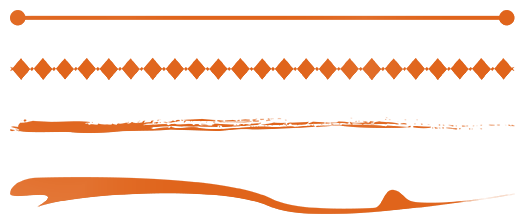
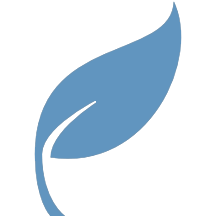

PRINCIPLES AND ELEMENTS OF DESIGN
The principles and elements of design are general rules or guidelines that artists use to create intriguing designs. The difference between principles and elements of design, is that principles are the rules to follow for great design. Elements of design are the tools that are used to follow the rules. These are listed below.
| Principles of Design | Elements of Design |
|---|---|
SCROLL
Principles of Design
Rules for Design
Repetition
Format
Commonly referred to as pattern, successful design repeats different elements such as shapes, texture, color, and more.
Repetition gives the design a standard format that provides uniformity. An example of this can even go the extent of corporation brand identity. All documents, posters, advertisements, and even ID cards must include the corporation logo. This logo is their way of formating how they will be visually represented.
Contrast
Opposites Attract
Contrast, when used successfully can draw out certain focus points. Contrast is widely used with color, but it can also be used by the types of lines drawn, space, or shapes used.
Do not confuse contrast with clash. Contrast is where two opposite elements are used to compliment the focus of the design. Clash is where two elements come together and battle for attention.
Emphasis
Focal point
On the canvas that is being designed, there is a lot of space that is not as important as other areas. Emphasis is used to draw eyes to the most important parts of a design. For example, colors that contrast, shapes that are larger, and textures that feel different all create a different emphasis.
Balance
Symmetry vs Asymmetry
| Symmetrical Balance | Asymmetrical Balance |
|---|---|
| Symmetrical balance is where everything in the design has a mirror image. This can be reflected on the horizontal or vertical axis'. If the design has a different color or line type mirrored, it can throw off the balance. | Asymmetrical balance is where the design feels well balanced, but it is not a mirror image. Asymmetrical balance can be achieved by the size of shapes and even color. Dark colors tend to be heavier than lighter colors. |
Unity
Piece by Piece
Unity, also known as harmony, is where there are multiple small parts to the design, where when they come together, they create a bigger, distinct part of it's own. These can be repeated elements in the same size, shape, or textures.
A good example of unity is a mosaic. Small tiles that have different colors and angles come together to form a larger work of art, creating human figures, animals, or landscapes. Each piece in itself is less interesting than the design as a whole.
Rhythm
Motion
Rhythm, also known as movement, is what draws eyes to different areas of the design. Leading lines are one way to accomplish movement, by leading the viewers eyes from any area of the piece down to a specific focal point.
Another way that rhythm can be accomplished is by color. Bright colors give the design more energy, where the duller colors give off a slow depressed feeling. Shape can add to rhythm as well. Curved shapes give off a sense of motion, where angular shapes give off a more static motion. Tight or loose designs contribute more to the tempo of the design; tight being more on the quick side, and loose being more mellow.
A good way to describe the rhythm of the design is if you were to turn it to life, how would the piece react? Would it move forward, backward, up, or down?
Elements of Design
Tools for Design
Line
Point to Point
Line is simply any edge that connects two distinct points. Lines are not always straight, and are not always clean cut. Some common names for these lines include vertical, horizontal, diagonal, zig-zag and curved.

Form
3-Dimensional
Similar to texture, with form there is a physical form and visual form. An example of physical form is a sculpture. When the sculpture is viewed in person, it can be walked around, it can be touched, and it can be lit differently to get different shadows and highlights. An example of visual form would be a photograph of a sculpture. That form cannot be viewed in the same ways as a physical form, but the lighting gives clues to the depth of the design.
Shape
2-Dimensional
Shape as opposed to form, is a 2-Dimensional object. Shapes can be either Geometrical or Organic.
| Geometrical shapes are made up of lines, and curves which have a specific mathematical equation to make everything look uniform, clean, and perfect. | |
| Organic shapes are more commonly shapes that are hand drawn. With organic shapes, a more free-flowing shape is produced, like a leaf. |  |
Space
Depth & Proximity
Space in design shows how close an object is in relation to another object. There are three different ways to show this.
Overlapping. In a city full of skyscrapers, buildings that overlap one another are physically in front of the other buildings.
Perspective. Looking down a straight road with street lights, the street lights progressively get smaller and smaller visually, although physically, they are the same size.
Atmospheric Perspective. In a forest covered in fog, the further away the trees are the less clear they become.
Texture
Tactile vs Visual
In design, there are two types of textures: tactile, and visual.
Tactile is a physical texture. This is most common with 3D design or other forms of designing with physical objects. Tactile textures are one way to explain how the work feels. Does it feel smooth, rough, sharp, or wet?
Visual texture is a texture you can see, but not feel. When designing a website or image on the computer, if you touch a screen with a brick background, it will feel smooth. However, depending on the lighting of the image, a texture can be implied.
Color
Feelings & Moods
Color is one of the most influential element of design. Designers carefully choose their colors to bring out different emotions that they want the viewer to feel.
- Hue – Name of the pure color
- Value – Lightness or darkness of the hue
- Intensity – Vibrance or dullness of the hue